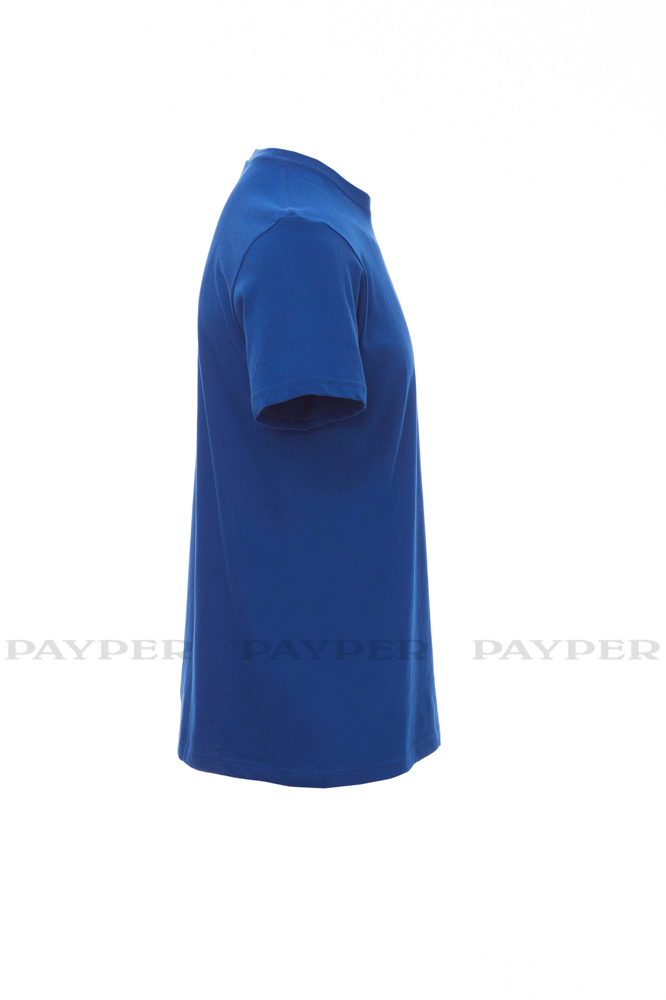
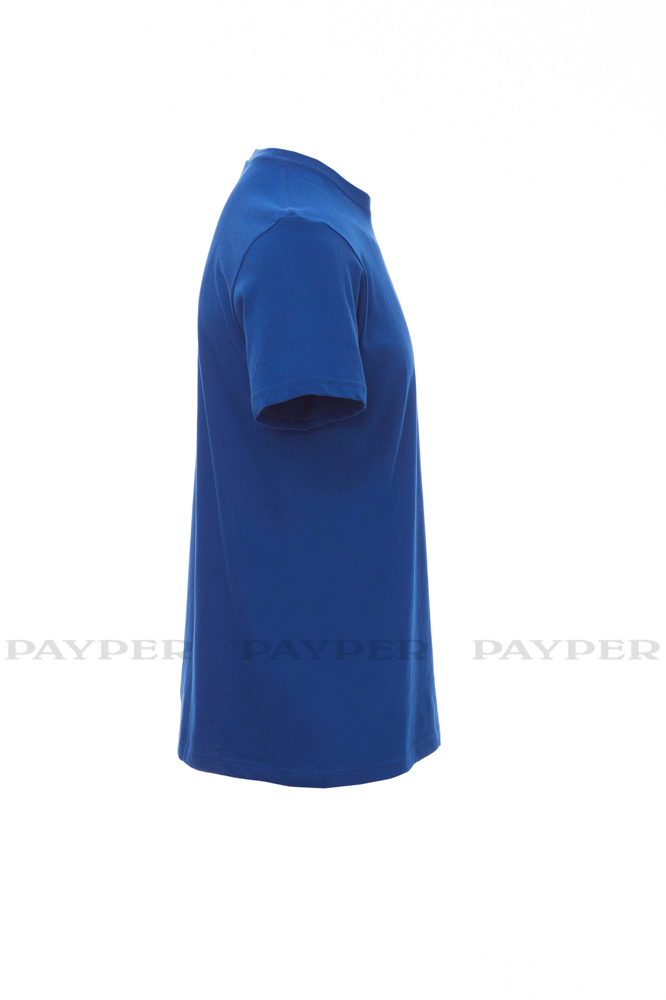
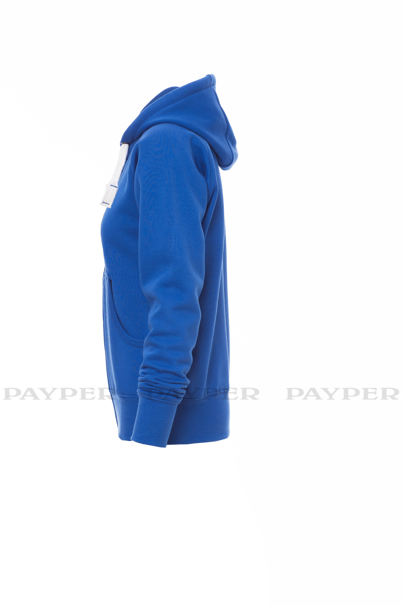
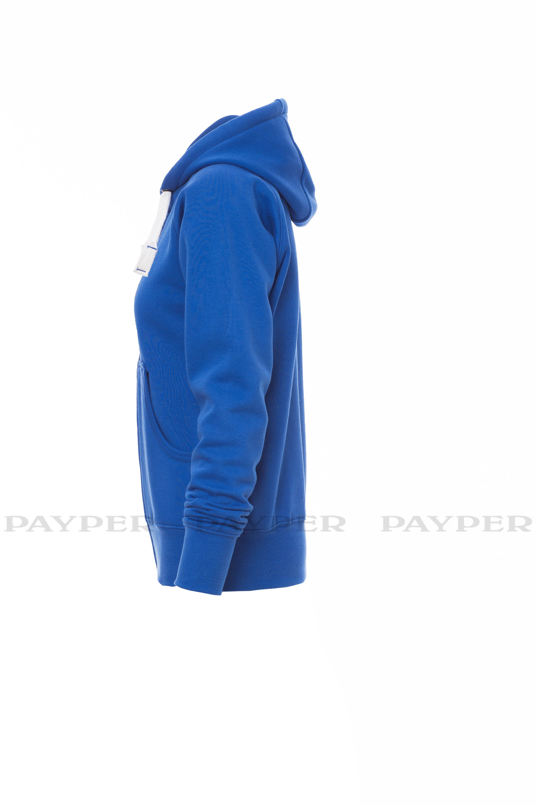
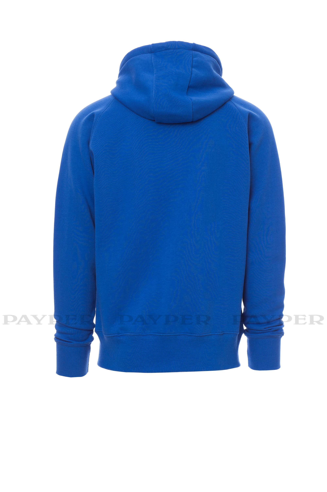
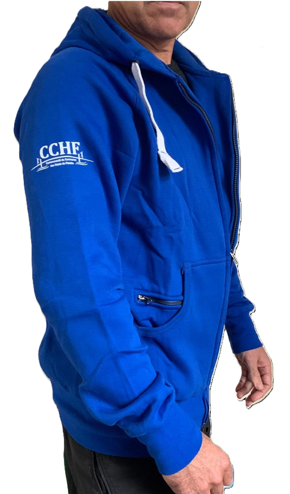
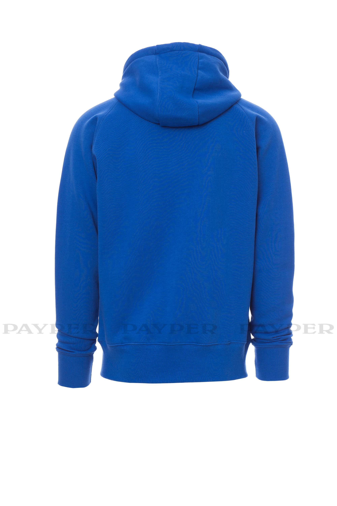
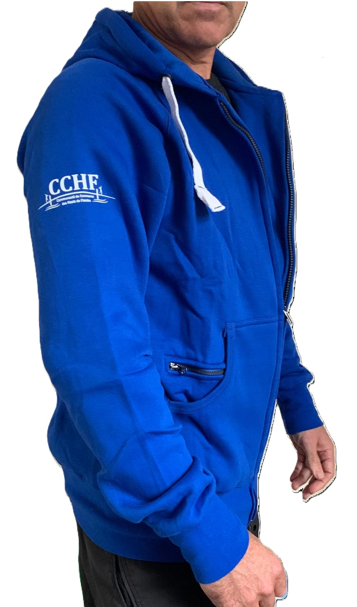

Notre boutique
Découvrez nos articles disponibles à la vente. Pour commander, c'est facile et sécurisé grâce à HelloAsso.
💬 Un petit mot du club :
Pour garder une gestion simple et éviter de bloquer la trésorerie du club,
nous ne tenons pas de stock sur les articles 🧾.
Chaque commande est donc fabriquée spécialement pour vous 💙
Comptez un délai d’environ 3 semaines avant la livraison —
le temps de produire, personnaliser et préparer votre article avec soin ✨
Les commandes sont à récupérer à la piscine Linéo quand le bureau du club est ouvert
👉 Merci de votre compréhension et de votre soutien —
c’est grâce à vous que le club continue de nager haut et fort ! 🏊♀️💪
T-shirt Hauts de Flandre Natation – Femme
Alliez élégance et confort avec ce tee-shirt cintré pour femme, parfait pour afficher les couleurs du club au quotidien.
Doté d’une encolure ras du cou et de manches courtes, il se distingue par son col en bord côte mixte spandex de 1,5 cm avec couture rabattue sur le devant et son ruban de renfort d’épaule à épaule en couleur contrastée.
Les coutures stretch assurent une excellente tenue et un confort durable, tandis que la coupe cintrée met en valeur la silhouette.
Détails exclusifs : imprimé avec le logo du club sur l’avant et le logo de la CCHF sur l’épaule.
Composition : 100 % coton
Aspect : Jersey doux et respirant
Poids : 155 g/m²
Tailles disponibles : XS – S – M – L – XL – XXL
T-shirt Hauts de Flandre Natation – Homme

 

Affichez fièrement vos couleurs avec ce tee-shirt pour homme alliant confort, résistance et style sportif.
Son design classique à encolure ras du cou et manches courtes le rend idéal pour toutes les occasions, de l’entraînement à la détente.
Le col en bord côte mixte spandex de 1,5 cm avec couture rabattue sur le devant et le ruban de renfort contrasté d’épaule à épaule garantissent durabilité et maintien parfait.
Les coutures stretch et la structure tubulaire (ou couture latérale pour le modèle mimétique) assurent un confort optimal et une grande liberté de mouvement.
Détails exclusifs : imprimé avec le logo du club sur l’avant et le logo de la CCHF sur l’épaule.
Composition : 100 % coton
Aspect : Jersey doux et respirant
Poids : 155 g/m²
Tailles disponibles : XS – S – M – L – XL – XXL – 3XL – 4XL – 5XL
Sweat Hauts de Flandre Natation - Bleu roi - Femme
 

Alliez élégance et confort avec le sweat zippé officiel du club, spécialement conçu pour les femmes.
Sa coupe cintrée met la silhouette en valeur tout en offrant une grande liberté de mouvement.
Doté d’une fermeture éclair SBS double curseur et d’une capuche à deux coutures, il allie style et praticité.
Les détails raffinés — cordon blanc avec œillets métalliques, poches kangourou dont une zippée, poignets et taille en côtes élastiques — assurent un look sportif et soigné.
Coutures renforcées pour une tenue durable, intérieur brossé pour une douceur incomparable.
Détails exclusifs : imprimé avec le logo du club sur l’avant et le logo de la CCHF sur l’épaule.
Composition : 70 % coton, 30 % polyester – intérieur brossé doux au toucher.
Poids : 300 g/m²
Tailles disponibles : XS – S – M – L – XL – XXL
Sweat Hauts de Flandre Natation - Bleu roi - Homme
 



Alliez confort et style avec le sweat-shirt zippé officiel du club !
Doté d’une fermeture éclair SBS double curseur, ce modèle associe praticité et élégance.
Sa capuche doublée avec cordon blanc et œillets métalliques apporte une finition soignée.
Les manches raglan et les poches kangourou, dont une petite poche zippée, assurent une liberté de mouvement et un rangement pratique.
Poignets et taille en côtes élastiques pour un maintien parfait, coutures renforcées pour une durabilité maximale.
Détails exclusifs : imprimé avec le logo du club sur l’avant et le logo de la CCHF sur l’épaule.
Composition : 70 % coton, 30 % polyester – intérieur brossé doux au toucher.
Poids : 300 g/m²
Tailles disponibles : XS – S – M – L – XL – XXL – 3XL – 4XL – 5XL